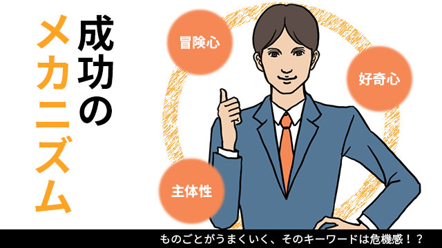

子どもがなかなか勉強しないと訴える親と話していると、色々悩みを吐き出した後で親がこのように言うことがあります。
「結局本人の問題ですよね。本人がその気にならないといくら言ったところでどうにもなりませんよね」と。
そうです。親も分かっている。本人がその気にならない限り傍からガミガミ注意したところでどうにもならない。
全くもってその通りで本人の自覚というかスイッチが入らないと何事も身につかない。
我々も生徒を長く教えてきてもそれは強く感じることで、いくら一生懸命教え勉強法を示し、課題を与えたところで本人が自らが「やる気」を稼働させなくては何も始まらない。
「馬を水辺に連れていくことはできるが、水を呑ませることはできない」ということわざがありますが、まさにそれです。
お膳立てを整えることはできても、最終的にそれに食らいつくかどうかは本人次第ということになります。
しかし、いくらうるさく言っても「やる気」を出さない子が、たとえば入試が近いなど追い込まれた局面になるとスイッチが入り見違えるように集中し、一気に伸びる場合があります。ある時を境に豹変（！）するのです。
いったい何が起こったのでしょうか。
実はコレ、子どもだけではなく大人でも同じことが起こります。
仕事などでも人は突然それまでと打って変わって目覚ましい成果を上げ始めることがあります。
受け身で消極的な姿勢から主体的で前向きに仕事に向き合うようになるのです。
以前の何倍も効率よくこなし、たちまち成果（結果）も出し続ける人になる。
何が起こったのでしょう。
「スイッチが入った」「自覚が芽生えた」
そう私たちは軽く判断しますが実のところ何が起きているのかよく分かっていないのではないでしょうか。
「彼（彼女）は変わった！」と驚嘆を込めてつぶやくのが関の山といったところでしょう。
しかし私は、彼（彼女）らが変わったというより彼らの見ている世界が変わったからというほうが正しいと思っています。
危機を感じるとスイッチが入りやすい
大人でも子供でも突如「やる気スイッチ」が入るときは共通点があります。
そのキーワードは危機感です
入試が間近に迫った。大型契約を取らないと自分も会社も危ない。いきなり大役に抜てきされた。いきなり降格された。会社が倒産しそうだ。
さらには病気や事故でしばらく動けなくなったなどもあります。
こういう、ある種絶体絶命－断崖絶壁に立たされる－危機的状況下でスイッチは入りやすいといえます。
危機感を感じると人は、それまでと違った物の見方、感じ方を採用します。
受け身で義務感でしかなかったときは、仕事だから仕方ないとか受験生だからイヤだけど勉強しなきゃならないなど、外側からの圧力に操られている思いがあった。
当然ながらそこには自発性はなく、他者の目を意識したアリバイ的動機だけで、目に映る光景は「やらなければいけない単調な決めごと」でしかなかったわけです。
しかし危機感や絶望、もう後がないという状況におちいると一転して「何をすべきか」がクリアに見えてくる瞬間があります。
「しなければならない」から「やってやる」という意欲へと反転する。単調でグレーな景色から鮮やかな立体映像へと視界は切り変わり、他者を意識したアリバイ工作から自分のための純粋な行為へとシフトチェンジが起こる。
こういうときまさに彼の心には他者は存在していません。「人にどう見られているか」とか「努力してないと思われているのでは」という恐れや疑いはなく、ただ自分のやるべきことがハッキリと見えそれを楽しんでいる自分がいることを感じてるだけなのです。
本当の主体性を発揮する
これはいわゆる「流れに乗っている」状態であり、外側からはすごい努力－頑張っている姿－に見えようと本人の内面ではむしろ流れているような感覚です。
頑張って何かをやっているというより次々と「やりたいこと」が流れてきて自然とそれをやり、気がついたら大きな成果が上がっていたという感じ。
こういう状態の人を外側から見ると、確かに彼らは「努力している」「苦しみながらやっている」というのではなく、何か楽しげで充実しており軽々と成果を上げているという感じです。
努力や苦しみの跡が見えるときは成果も中途半端なことが多いのです。
ガンバっているときは流れに乗っていないからです。どこか人の目を気にしていたり、あてがわれた目標を受け入れているだけに過ぎなかったり、ムリヤリ情熱をかき立てたりしているのです。
受験生でも会社のプロジェクトメンバーでも事業家でも、うまく成果をあげる人は「流れに乗っている」人であり（フロー状態とかゾーンに入るともいう）苦しみながら努力する人ではないといえます。
ではこの流れ（フロー、ゾーン）に入るにはどうすればよいのでしょう。
以下にまとめてみます。
①自分のために行う（他に頼らない）
②不安、心配恐れなどの感情を心から追い出す
③義務感、責任感からではなく好奇心や冒険心から行う
①の自分のためというのは、他から強制されたり「やらないと大変なことになるから」という他律的動機ではなく、自らのために自らの力でやるという自発的決意ということです。
勉強にしろ仕事にしろこれをやることで「自分はどんな成長が可能か」をトコトン追及する姿勢です。
「仕事だからやらないわけにはいかない」はもっともフロー状態から程遠いといえます。
②については、多くの場合人は「自分にできるだろうか」「もし失敗したら」と不安を感じながら行動するのでかえって力を発揮できません。自分の実力を出し切れないのは心の中に不安や恐れがあるからで、これらのネガティブな感情は極力排除すべきです。
不安を解除する方法は意外とカンタンで１つはその不安を思いきり感じきってみること。
もう１つはその不安が的中した場合どんなことが起こるか、つまり最悪の状態を想像して（シミュレーションして）みることです。
感情はただ抑え込むのではなくトコトン感じてれば消えます。あわせて「最悪」を想定することでたとえ失敗しても「せいぜい○○になるだけだ」と達観できます。
先ほどうまくいく人は「危機感」がキーワードだと言いましたが、実は危機や絶望というのは頭が真っ白になる、どうしたらよいか分からないという思考停止状態でありそれはまさに不安や心配などをのんびり感じている時ではないということです。
不安や心配、恐れという感情は頭でつまり思考で色々過去や未来の「失敗」を計算しているから浮かび上がってくるもので、うまくいく人は、一時的に思考停止になることでそれらの感情に囚われなくなったのです。
さて最後に③の好奇心冒険心です。
人は義務や責任から物事を行うとき、そこに不自然な努力とネガティブな感情が伴い十分な力を発揮することはできません。
だからいっそ「全ては自分のためだけにやる」そして「未知の領域で自分の可能性を試してやる」という前向きのスタンスを取ることです。
義務や責任は外側からの評価を気にする姿勢の裏返しであり、受動的で防衛的なスタンスなのでどうしても「失敗を避ける」ことにエネルギーを使うことになりがちです。
失敗を避けようとする気持ちから大きな成果を上げることは絶対あり得ません。
そんな人は見たこともない。
それより失敗しようがどうしようがどうでもいい。やりたいようにやりたいことをやる。
そういう好奇の心とワクワクする探究（冒険）心をもつほうが結果的に高いパフォーマンスを発揮するのです。
一切の「カッコつけ」を打ち捨てただひたすら自分のためにする。そのとき人は流れに乗りやるべきことが次々と分かり、気が付いたら高いレベルに達していたとなるのです。
これが本当の主体性であり主体的であるとき人はもっとも創造的な状態になります。
自分がその状態になっているかどうかは、外側の世界が今までと違って見えるかどうかで分かります。
今まで単調で退屈な日々であったが、やるべきことやらなければならないばかりだったのが、楽しく色鮮やかな毎日に変わり「やりたいこと」ばかりに変わるからです。